Ethnic Studies | Lesson 09 | Local Community Studies
San Diego's Hidden Communities
Essential Question
Who are your neighbors, where did they come from, and what did America have to do with why they are here?
On a Saturday morning in City Heights, San Diego can feel like a world map you can walk through. A family may pass a Somali market, a Vietnamese restaurant, a Mexican bakery, and a mosque within a few blocks. Those places did not appear by accident. They connect to war, empire, labor, refugee resettlement, family networks, and the choices people made after being pushed across borders. This lesson keeps the camera on San Diego while using larger images from world history to explain how these communities arrived.
On a Saturday morning in City Heights, San Diego can feel like a world map you can walk through. A family might pass a Somali market, a Vietnamese restaurant, a Mexican bakery, and a mosque in a few blocks. Those places did not appear by accident. They connect to war, empire, labor, refugees, and family networks. This lesson keeps the focus on San Diego while showing the history that brought people here.
San Diego neighborhoods connected to this lesson: City Heights, Linda Vista, El Cajon, National City, and Chula Vista. Teacher-created or public-domain base map.SECTION ONE
HOW THEY GOT HERE
FILIPINO SAN DIEGO: NAVY ROUTES AND U.S. EMPIRE
Filipino | National City and Chula Vista
1898 matters: U.S. rule in the Philippines helped create the Navy pathway that connected Filipino families to San Diego.
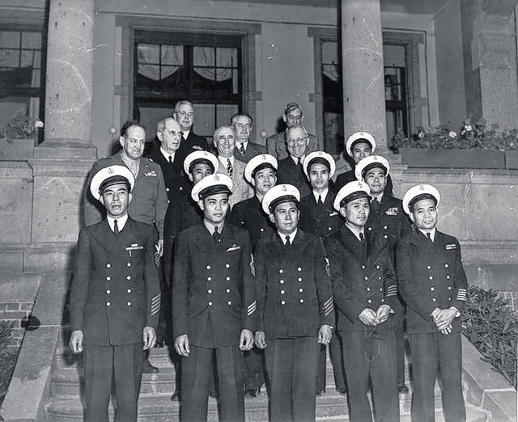
Filipino men serving as stewards or mess attendants in the U.S. Navy, early twentieth century. This image connects empire, labor, and San Diego's naval history. Naval History and Heritage Command or Wikimedia Commons.
Many Filipino American families in the South Bay can trace their local history to the Navy. After the United States took control of the Philippines in 1898, Filipinos were tied to the United States without receiving full citizenship. The U.S. Navy began recruiting Filipino men in 1901, often limiting them to service jobs such as stewards and mess attendants. San Diego's naval bases made the region a place where Filipino sailors, workers, and families built roots over generations. Filipino American history in National City and Chula Vista is therefore not only an immigration story. It is also a story of empire, labor, military service, and family life.
Many Filipino American families in the South Bay connect to the Navy. After 1898, the United States controlled the Philippines. Filipinos were tied to the United States, but they were not full citizens. The Navy recruited Filipino men starting in 1901, often for service jobs. San Diego's naval bases helped Filipino families settle in National City and Chula Vista. Their story connects immigration, empire, labor, and family life.
SOMALI CITY HEIGHTS: WAR, RESETTLEMENT, AND REBUILDING
Somali | City Heights
1991 and 1993 matter: Somalia's civil war, U.S. intervention, and refugee resettlement helped make City Heights a home for Somali families.
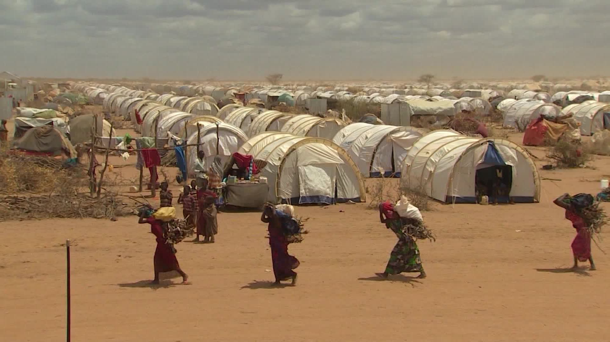
Somali refugees after civil war displaced families in the early 1990s. This wider history helps explain Somali resettlement in City Heights. UNHCR or Wikimedia Commons.
City Heights became a home for Somali families after Somalia's government collapsed in 1991 and war displaced millions of people. The United States intervened militarily in Somalia in 1993, then withdrew while the conflict continued. Somali refugeesPeople forced to leave their country because returning home is unsafe. were later resettled in American cities, including San Diego. In City Heights, families built markets, restaurants, tea houses, mosques, youth programs, and social service organizations. The neighborhood became more than a place of arrival. It became a place where East African families could find food, language, help, and community.
Somali families came to San Diego after war made Somalia unsafe. Somalia's government collapsed in 1991. The United States sent troops in 1993, then left while the conflict continued. Somali refugees were later resettled in American cities, including San Diego. In City Heights, families built markets, restaurants, mosques, tea houses, and support groups.
HMONG LINDA VISTA: THE SECRET WAR AND REFUGEE CAMPS
Hmong | Linda Vista
1961 to 1975 matters: the Secret War in Laos made many Hmong families U.S. allies, then refugees.
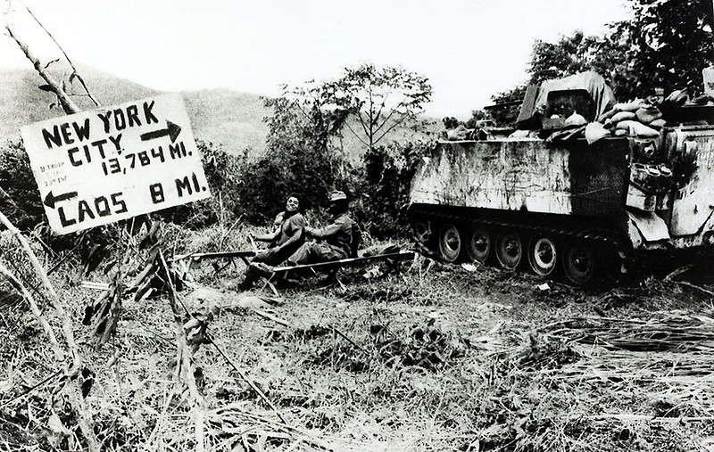
Hmong allies during the Secret War in Laos. Many Hmong families later fled because of their connection to the United States. Archival educational source or Wikimedia Commons.
The Hmong story in San Diego begins in the mountains of Laos, far from Linda Vista. During the Cold War, the CIA recruited many Hmong people to fight a secret proxy warA war where a powerful country supports local fighters instead of fighting openly. against communist forces. When the United States withdrew from Southeast Asia in 1975, many Hmong families were targeted as enemies and fled to refugee camps in Thailand. Some later came to San Diego and rebuilt their lives near other Southeast Asian refugee communities. Linda Vista became one of the places where children grew up between American schools and Hmong family memory.
The Hmong story in San Diego begins in Laos. During the Cold War, the CIA recruited many Hmong people to fight a secret war. When the United States left Southeast Asia in 1975, many Hmong families were targeted. They fled to refugee camps in Thailand. Some later came to San Diego and rebuilt their lives in places like Linda Vista.
CHALDEAN EL CAJON: IRAQ, FAITH, AND SAFETY
Chaldean | El Cajon
2003 matters: the U.S. invasion of Iraq and later violence helped push many Chaldean families toward El Cajon.
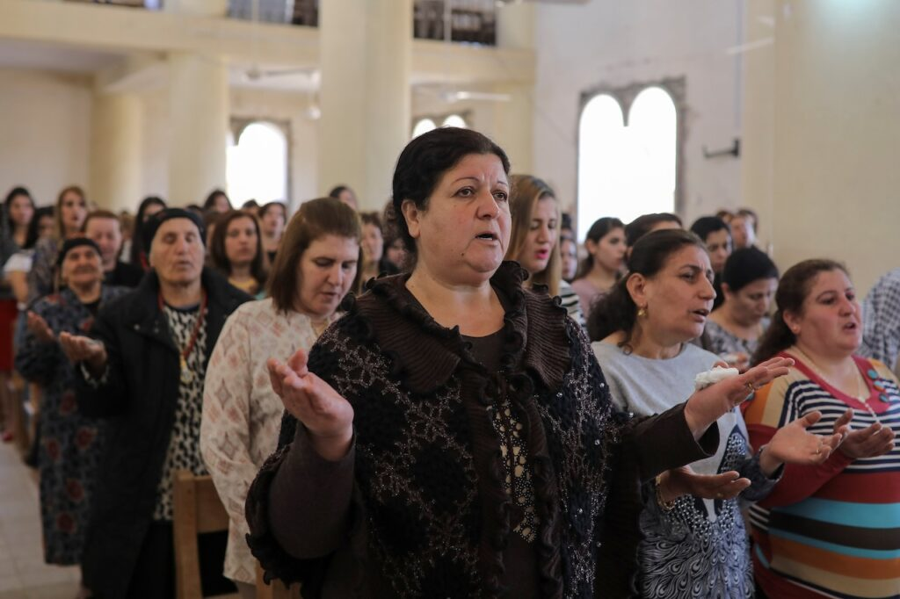
Iraqi Christian families displaced after the Iraq War and later violence. This history helps explain why El Cajon became a major Chaldean community center. UNHCR or public humanitarian source.
ChaldeansAn ancient Christian community from Iraq with roots in Mesopotamia. are an ancient Christian people from Iraq. Many speak Neo-Aramaic, a language connected to Aramaic, the language spoken in the time of Jesus. After the United States invaded Iraq in 2003, central authority weakened and violence against religious minorities increased. Churches were attacked, leaders were kidnapped, and many families no longer felt safe. El Cajon received many Chaldean refugees and immigrants. Over time, churches, bakeries, markets, restaurants, and family businesses made the city feel like a new center of Chaldean life.
Chaldeans are an ancient Christian people from Iraq. Many speak Neo-Aramaic, a language connected to Aramaic. After the United States invaded Iraq in 2003, violence against religious minorities increased. Many Chaldean families no longer felt safe. El Cajon became a major home for Chaldean churches, markets, restaurants, and family businesses.
DID YOU KNOW
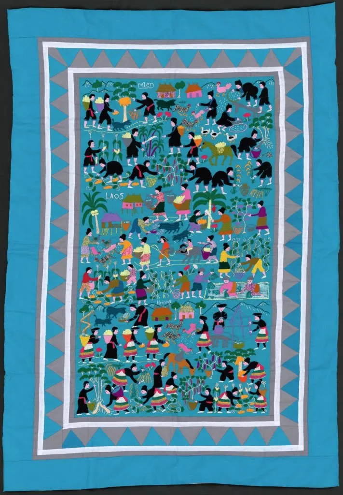
Hmong story cloths, or paj ntaub, can record war, migration, village life, and family memory through stitched scenes.
Some Hmong families carried history in cloth. Story cloths could show villages, soldiers, refugee camps, rivers, animals, and journeys. For students in San Diego, a story cloth can work like a visual textbook: it shows how memory survives when people are forced to leave home quickly.
SECTION TWO
WHAT THEY CARRIED
The communities in this lesson did not arrive as blank pages. They brought languages, recipes, prayers, music, business skills, military experience, family networks, and ways of helping each other survive. Some carried official documents. Others carried memories, clothing, photographs, songs, or religious objects. These things mattered because they helped people rebuild identity in a new place. In Ethnic Studies, culture is not decoration. It is evidence of how communities preserve memory and adapt.
The communities in this lesson did not arrive with nothing. They brought languages, food, prayers, music, skills, family ties, and memories. Some carried documents. Others carried clothing, photos, songs, or religious objects. These things helped people rebuild identity in a new place. In Ethnic Studies, culture is evidence.
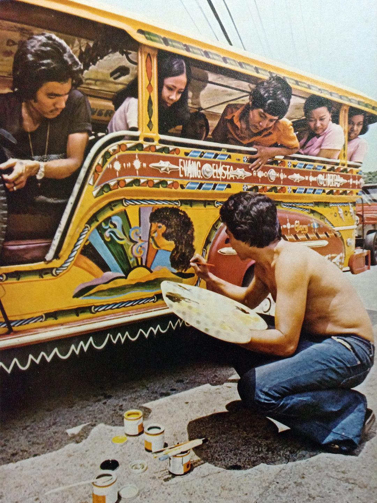
Jeepney art in the Philippines. Jeepneys grew from postwar vehicles into symbols of Filipino creativity and public life. Wikimedia Commons.
FILIPINO MATERIAL CULTURE
Jeepney art, Navy uniforms, family photos, and balikbayan boxes can all tell stories about movement, labor, and connection across the Pacific.
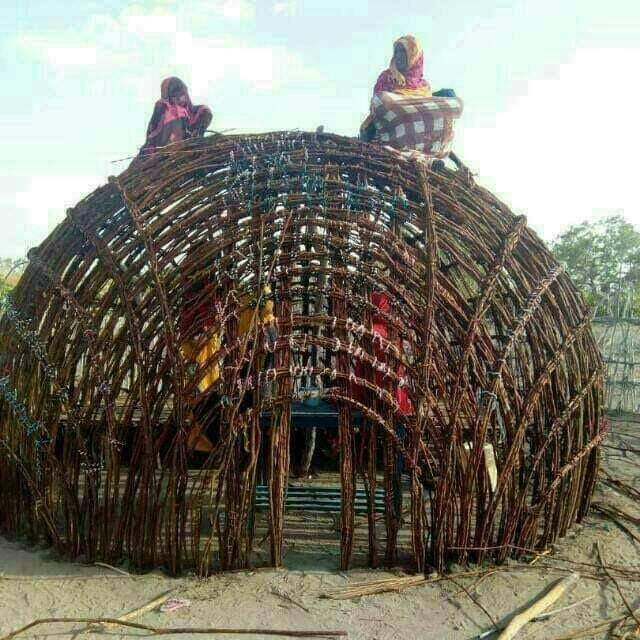
A Somali aqal, a traditional portable home. Material culture helps students see the world people came from, not only the crisis that displaced them. Wikimedia Commons.
SOMALI CULTURAL GEOGRAPHY
Somali culture includes poetry, tea, Islam, nomadic traditions, city life, trade, family networks, and stories carried into City Heights.
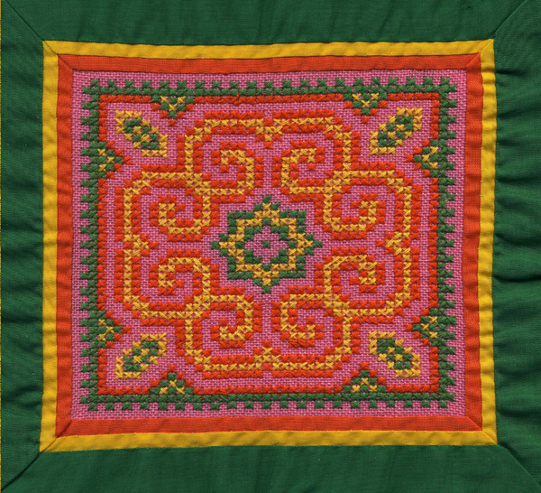
Paj ntaub embroidery carries Hmong design, memory, and family tradition. Wikimedia Commons or museum collection.
HMONG MEMORY IN THREAD
Story cloths and embroidery helped preserve memory after war, displacement, and refugee camps changed family life.
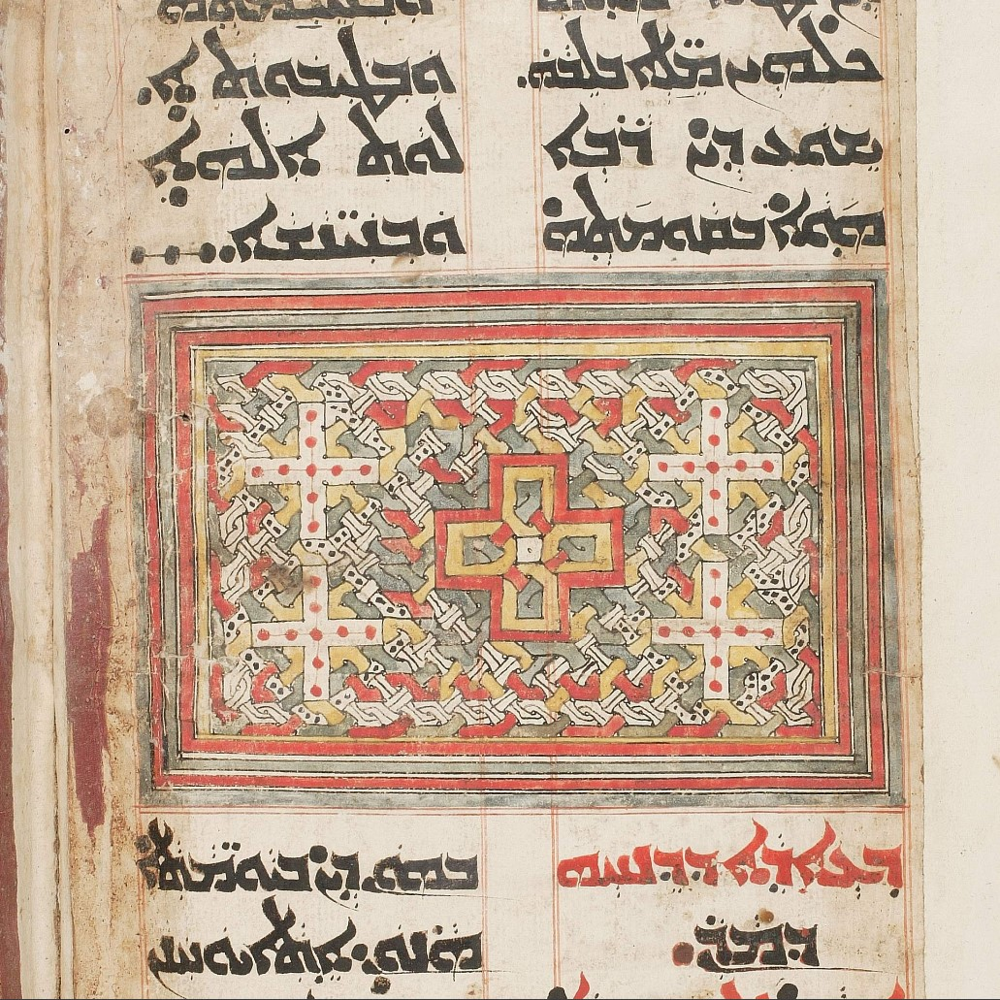
A Chaldean or Syriac Christian manuscript or religious image. These traditions connect El Cajon's Chaldean community to ancient Mesopotamian Christian history. Wikimedia Commons or museum collection.
CHALDEAN FAITH AND LANGUAGE
Neo-Aramaic language, church traditions, icons, and liturgy help Chaldean families preserve identity after leaving Iraq.
FAST FACTS
HOW GLOBAL DECISIONS BECAME LOCAL SAN DIEGO STORIES
1898the year U.S. rule in the Philippines began, helping create the Navy pathway that tied many Filipino families to San Diego
1975the year U.S. withdrawal from Southeast Asia left many Hmong allies in danger and pushed families toward refugee camps
1990sthe decade when Somali refugee resettlement helped make City Heights a major East African community hub
2003the year the U.S. invasion of Iraq helped trigger new violence and displacement for Chaldean Christian families
SECTION THREE
WHAT THEY BUILT IN SAN DIEGO
Once families arrived, they had to build more than homes. They built institutions. A market could help someone find familiar food and hear a familiar language. A church or mosque could help families celebrate, grieve, and organize. A youth program could help children translate two worlds: family memory and American school life. Across San Diego, these communities built support systems that made survival possible and belonging visible.
Once families arrived, they had to build more than homes. They built institutions. A market could help people find familiar food and language. A church or mosque could help families celebrate, grieve, and organize. A youth program could help children move between family memory and American school life. These support systems made belonging visible.
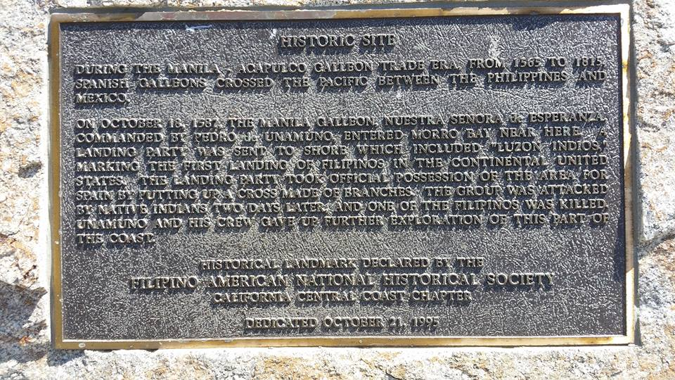
Filipino Landing Day or Filipino American community event in the South Bay. Local community source.
SOUTH BAY FAMILY NETWORKS
Filipino American families built churches, veterans networks, civic groups, festivals, businesses, and political leadership in National City and Chula Vista.
Somali and East African community organizations help refugee families navigate life in San Diego. Local community source.
CITY HEIGHTS SUPPORT SYSTEMS
Somali and East African organizations built services for translation, youth support, health, housing, and refugee family needs.
Hmong New Year celebrations help younger generations learn language, clothing, music, and memory. CC license or local community source.
HMONG MEMORY IN PUBLIC
Hmong families preserved culture through language programs, celebrations, clothing, food, music, and story cloth traditions.
St. Peter Chaldean Catholic Cathedral in El Cajon, a major religious institution for the local Chaldean community. Wikimedia Commons or local public source.
EL CAJON AS A NEW CENTER
Chaldean families built churches, bakeries, markets, restaurants, and business networks that made El Cajon a new community center.
SECTION FOUR
SAN DIEGO NOW
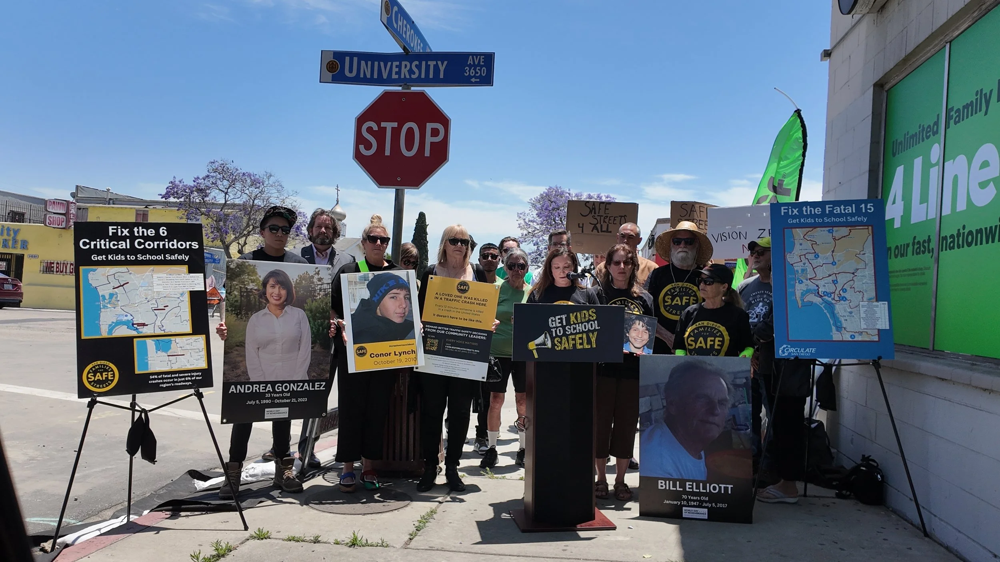
City Heights community action. Modern local history includes residents organizing for safer streets, youth services, housing, language access, and neighborhood resources. Local community source.
Today, the children and grandchildren of these communities are San Diegans in the fullest sense. They go to local schools, play on local teams, work in hospitals, restaurants, stores, offices, military bases, and family businesses. Some speak only English. Some move between English and a family language at home. Some feel proud of their history, while others feel tired of being asked where they are "really" from. Their lives show that San Diego is not separate from world history. It is one of the places where world history became local.
Today, the children and grandchildren of these communities are San Diegans. They go to local schools and work in local jobs. Some speak only English. Some speak English and another family language. Some feel proud of their history, while others are tired of being asked where they are "really" from. Their lives show that world history became local in San Diego.
Understanding these communities means looking beyond simple labels like immigrant, refugee, or minority. Filipino American roots in the South Bay connect to U.S. empire and Navy labor. Somali life in City Heights connects to civil war, refugee resettlement, and neighborhood organizing. Hmong life in Linda Vista connects to a secret war and the work of preserving memory. Chaldean life in El Cajon connects to the Iraq War and the rebuilding of an ancient Christian community. Each story is different, but all of them ask students to see their own city with sharper eyes.
These communities cannot be explained with simple labels. Filipino American roots in the South Bay connect to U.S. empire and Navy labor. Somali life in City Heights connects to war, resettlement, and organizing. Hmong life in Linda Vista connects to a secret war and cultural memory. Chaldean life in El Cajon connects to Iraq and the rebuilding of an ancient Christian community. Each story helps students see San Diego more clearly.
ART SPOTLIGHT
Gintong Kasaysayan, Gintong Pamana: Filipino Americans: A Glorious History, A Golden Legacy | Eliseo Art Silva, 1995
This large public mural in Historic Filipinotown, Los Angeles, shows Filipino and Filipino American history across centuries, including migration, resistance, labor, and community memory.
Eliseo Art Silva painted the mural when he was only twenty-two years old. The mural is not in San Diego, but it helps explain why Filipino American communities across California fight to be seen in public history. A wall can do what a textbook often fails to do: put workers, migrants, artists, and elders in the center of the story.
PRIMARY SOURCE MOMENT
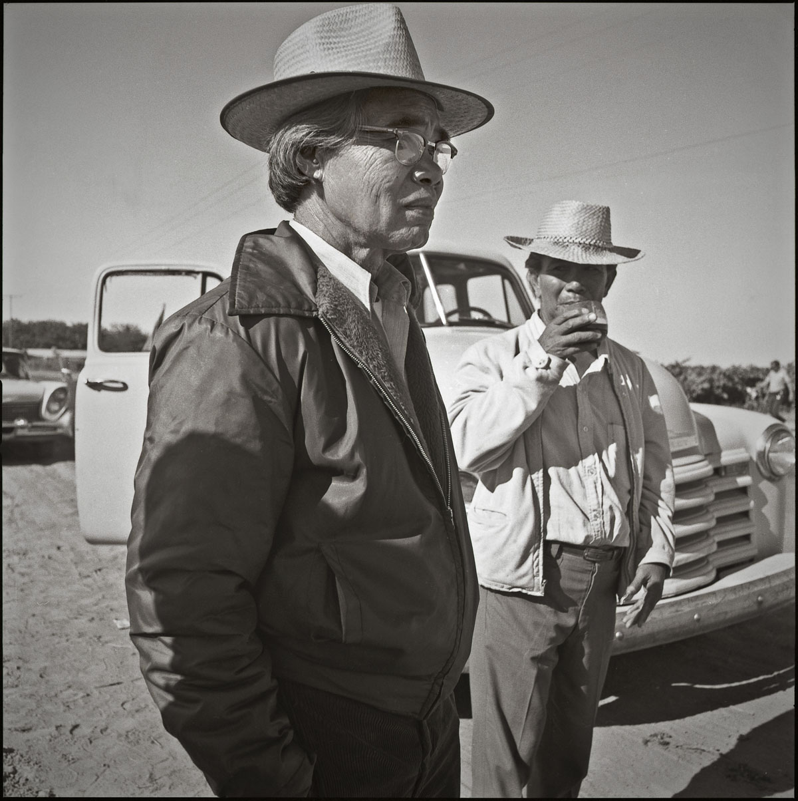
Philip Vera Cruz, Filipino American labor organizer and United Farm Workers leader. National Park Service or labor history archive.
"My life within the union, my life now outside the union, are all one: my continual struggle to improve my life and the lives of my fellow workers. But our struggle never stops."
Philip Vera Cruz, quoted in labor history accounts of his life and work, 1990s
WHY THIS MATTERS: Vera Cruz connects personal life to community struggle. He does not describe organizing as one event that ended. He describes it as a continuing responsibility. His words help students see that communities are not only shaped by U.S. decisions. They also respond, organize, and build power.
THEN AND NOW
SAN DIEGO IS A LIVING MAP: THE NEIGHBORHOODS STUDENTS PASS EVERY DAY CARRY WORLD HISTORY IN LOCAL FORM.
EARLY 1900S
Filipino men serving in the U.S. Navy, early twentieth century. Navy recruitment helped connect Filipino families to San Diego and the South Bay. Naval History and Heritage Command or Wikimedia Commons.
NOW
Filipino American community life in San Diego's South Bay today. Local roots connect to more than a century of U.S. rule, labor, military service, and migration. CC license or local community source.
THEN
In the early twentieth century, Filipino men served in the U.S. Navy while the Philippines was under American rule. Many worked in restricted service jobs. San Diego's naval presence helped turn a global imperial relationship into a local family history.
NOW
Today, Filipino American communities in National City, Chula Vista, and the South Bay are multigenerational. Families have built churches, businesses, civic organizations, festivals, and political leadership. Their story shows how an overseas decision became part of everyday San Diego life.
CONNECTION
The same pattern appears across this lesson: American decision, movement across borders, resettlement, and community building. Somali, Hmong, Chaldean, and Filipino American communities did not appear in San Diego by accident. Their neighborhoods help students read San Diego as a living record of U.S. actions in the world.
Which community story most changes the way you see San Diego, and why?